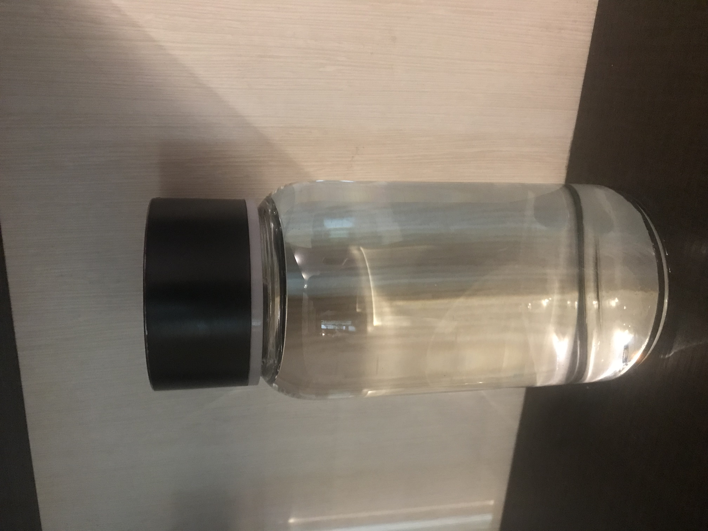
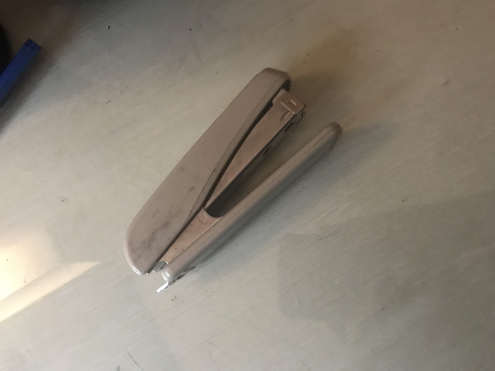
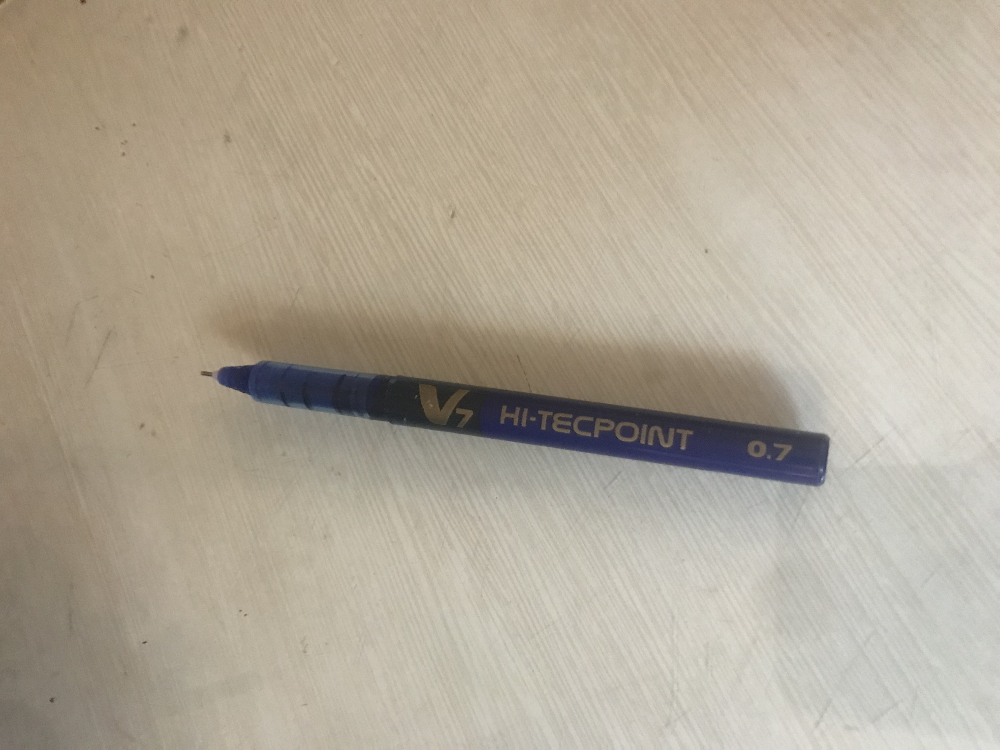
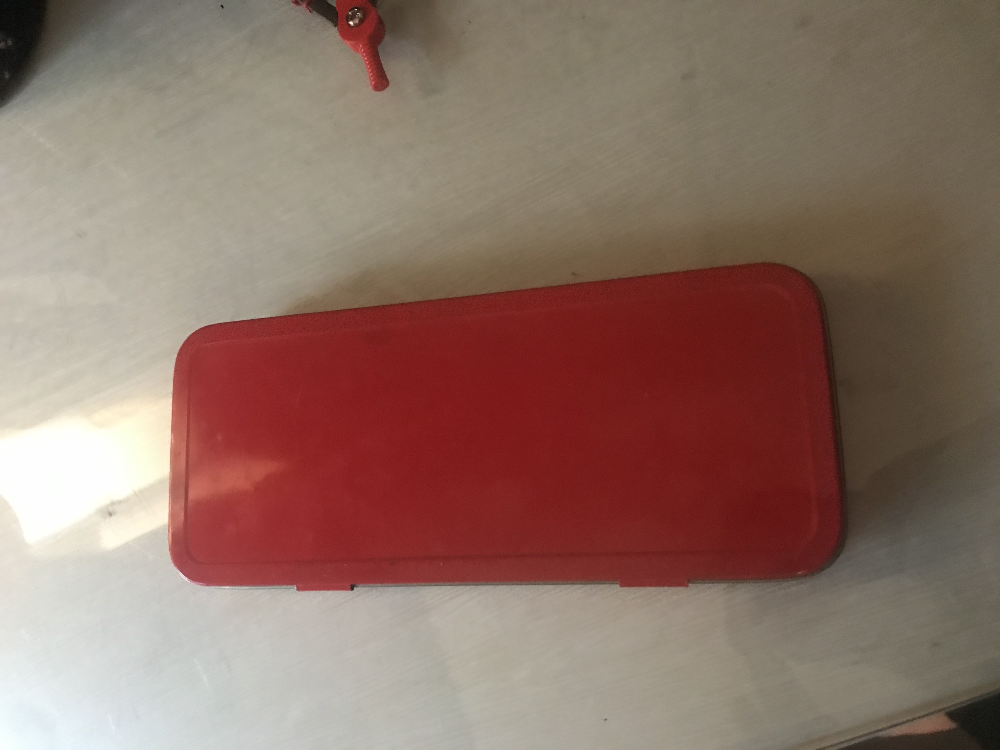

CASE STUDY

BOTTLE
output on Azure: pen
output on MobileNet:bottle
therefore mobilenet is more accurate here

STAPLER
output on Azure: stapler
output on MobileNet:book
Azure is more accurate here
BOOK
output on Azure: book
output on MobileNet:book
Azure is more accurate here

PEN
output on Azure: pen
output on MobileNet:pen
therefore mobilenet is more accurate here

BOX
output on Azure: box
output on MobileNet:BOOK
neither is completely accurate, however Azure did fluctuate between box and book therefore Azure is more accurate